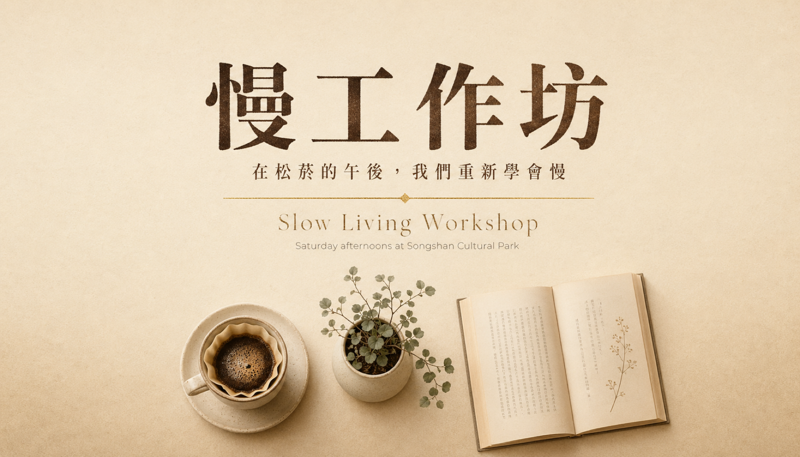

返回 CH6 模板速查站
(A6)
Bilingual Layout 中英雙語版面
中英雙語並列排版的視覺。台灣品牌 / 機構 / 活動最常需要——對外要有國際感（英文）、對內要有本土親切感（中文）。兩廳院、松菸、文化部活動、雙語網站 hero、雙語商品標籤都會用。
這張卡片你會學到
能判斷何時用雙語版面（與單語模板差異）
能拆解 6 段並安排兩種語言的視覺重量比
能識別 4 種踩雷（兩語同等大小／字體不對／斷行不對／文化轉換失敗）
(01)
適用場景
這個模板用在哪
中英雙語並列的版面。台灣有國際觀眾的活動、機構、品牌都需要這種視覺。重點是「主導語要明確」（不能兩個都同等大小）、「字體配對」（中文用襯線、英文也用襯線；中文黑體、英文 sans）、「斷行對齊」（兩語逐行對應）。
典型客戶 / 交付物 公部門 / 文化機構 / 外商在台分公司、活動接案 NT$8,000-20,000、交付：雙語主視覺 1-3 比例
四個典型用途：
- 兩廳院 / 松菸 / 高美館活動視覺（公部門 / 文化機構雙語必須）
- 外商在台分公司活動主圖（Apple / Google / IKEA 在台辦活動）
- 雙語品牌官網 hero（新創、設計品牌、文創精品）
- 雙語商品標籤 / 包裝（出口型本地品牌 / 文創商品）
| 對比項 | 本卡片 · A6 Bilingual Layout 中英雙語版面 | 近似模板 |
|---|---|---|
| 語言層級 | 必須主導 + 副從 | 其他模板：單一語言 |
| 字體配對 | 中文＋英文必須調性一致 | 其他：單一字體系統 |
| 斷行 | 兩語逐行對應、視覺平衡 | 其他：自由排版 |
| 使用場景 | 公部門 / 文化 / 雙語品牌 | 其他：商業 B2C |
| 文化轉換 | 不只翻譯、要在地化 | 其他：單一語境 |
| 產出難度 | 高（中英排版美學最難） | 其他：中 |
一句話判斷：客戶問「我的活動有外國觀眾」走 A6；問「我們是出口型品牌」走 A6；問「公部門活動」走 A6。A6 是文化機構接案的入場券——一個雙語視覺案 NT$8000-20000、且機構通常一年多次合作。
(02)
模板拆解｜6 段 prompt 結構
bilingual layout 6 段。核心難度在「主從關係」——客戶常想「兩個語言一樣重要」、但視覺上必須有主從、否則兩個都看不清：
| 段 | 段落 | 必問還是可預設 | 填什麼 |
|---|---|---|---|
| 1 | 主導語 vs 副從語 | 必問 | 主導（70% 視覺重量）+ 副從（30%）；通常台灣場合中文主、英文副；對外場合反之 |
| 2 | 中文字體 | 必問 | 標題：金萱 / 思源宋體粗 / 文鼎晶熙黑；內文：思源黑體 / Noto Sans TC |
| 3 | 英文字體 | 必問 | 與中文「調性對應」：中文襯線→英文 serif；中文黑體→英文 sans |
| 4 | 排版方式 | 必問 | 並排 / 上下 / 左中右三段；兩語逐行對應；視覺重量平衡 |
| 5 | 文化轉換 | 選用 | 不只翻譯——「精緻」可譯 refined / curated / considered 各帶不同氣質 |
| 6 | 限制 | 固定寫死 | 禁忌：兩語同等大小、字體調性不對、斷行不對齊、直譯生硬 |
記憶口訣：主從 → 中字 → 英字 → 排版 → 文化 → 禁。新手最常踩「兩語同等大小」——客戶說「兩個都重要」設計師就把字級設一樣，結果兩個都看不清。視覺上一定要有 70/30 主從。
(03)
示範圖｜可複製、可重現
下面這張是松菸文創園區「Slow Living 慢工作坊」雙語活動主視覺。中文主導（70%）+ 英文副從（30%）、字體配對精準（金萱粗 + Playfair Display）、斷行對齊。

完整 prompt · 松菸 Slow Living 雙語活動視覺
請生成一張中英雙語活動視覺： 【主題】松菸文創園區 · Slow Living Workshop 慢工作坊系列 【主從關係】中文主導（70% 視覺重量）+ 英文副從（30%） 【中文（主）】 - 大字標題：「慢工作坊」（4 字、金萱粗體質感、深棕、置中） - 副標：「在松菸的午後，我們重新學會慢」（細體、淺棕、置中） - ※ 標籤上的中文字本就是 AI 生圖 弱項——本提示詞主要驗構圖、實際交付用 Figma 後製疊金萱體中文。 【英文（副）】 - 副標題：「Slow Living Workshop」（Playfair Display 細襯線、米白色、置中、字級為中文標題的 50%） - 副副標：「Saturday afternoons at Songshan Cultural Park」（無襯線細體、極小、置中） 【視覺】中央 anchor visual：一杯手沖咖啡 + 一盆極簡綠植 + 一本翻開的書（從上方俯拍、構圖簡潔） 【背景】奶白漸變底（米白上 → 暖砂下）、輕微紙質紋理。 【字體配對】中文襯線（金萱粗）→ 英文襯線（Playfair Display）、調性一致。 【色板】嚴格 3 色：米白底 + 深棕字 + 燙金 accent（用於分隔線）。 【限制】嚴禁人物、嚴禁中英文同等大小（必有 70/30 主從）、嚴禁字體調性不對應（譬如中文襯線配英文 sans）、嚴禁鮮艷色、嚴禁兩語斷行不對齊。
讀圖時看這 4 個點：(1) 中英主從關係明確嗎（一個顯然主、一個顯然副）？(2) 字體調性配對嗎（中襯英襯 / 中黑英 sans）？(3) 兩語斷行有沒有對齊？(4) 文化轉換有沒有「在地感」？
(04)
改成你的場景｜踩雷與失敗案例
把 prompt 拿來、改 3 個替換槽就變你的版本：
| 替換槽 | 你的版本 |
|---|---|
| ⓐ 主導語 = ?（中或英） | 例：中文主（公部門 / 在地活動）／英文主（外商 / 國際會議） |
| ⓑ 字體配對 = ? | 例：金萱粗＋Playfair（文青）／思源黑＋Helvetica（商業） |
| ⓒ 排版方式 = ? | 例：上下並排（最常用）／左右並排（雙語標籤）／三段式（標題＋副題＋細節） |
最常見的 4 種踩雷：
- 兩語同等大小 客戶說「兩個都重要」、設計師就 50/50、結果都不夠突出。解法：明確寫「primary language at 70% visual weight, secondary at 30%」、解釋給客戶「主從不等於不重要」。
- 字體調性不對應 中文金萱粗（襯線）配英文 Helvetica（sans）= 視覺不協調。解法：明確寫「Chinese serif must pair with English serif (Playfair / Garamond)」、「Chinese sans (Source Han Sans) pair with English sans (Inter / Helvetica)」。
- 斷行不對齊 中文 4 字、英文翻譯成 8 字、視覺重量不對等。解法：英文翻譯時主動縮減（「慢工作坊」→ Slow Workshop 而非 The Slow Living Workshop Series）、必要時調整字級補償。
- 中文字體限制 + 文化轉換 AI 生圖工具的中文字體限制 + 文化在地化雙重挑戰。A6 的最佳策略：英文用 AI 直接生成、中文走 後製字體疊圖工作流附錄 用金萱／思源宋／Noto Serif TC 後製疊上。
實戰提醒：A6 是 A 組裡最依賴後製疊字的卡片——因為核心價值就是「中文字體調性」。跟客戶溝通時直接講白：「AI 生圖工具給你構圖跟英文、中文金萱我用 Figma 後製疊上」，客戶（尤其文化機構）通常理解。
交付提醒 本卡片的 AI 生成的示範圖不是可直接給客戶的最終交付品。中文商業案一律先用 AI 生出構圖（含英文佔位文字）、再走 後製字體疊圖工作流 在 Figma／Canva 疊上中文、最後校稿確認才交付給客戶。
本卡片改寫自 ConardLi／garden-skills 之
bilingual-layout-visual.md 模板（MIT License、2026），已對中文進行台灣用語在地化、加入本地接案情境與失敗案例。